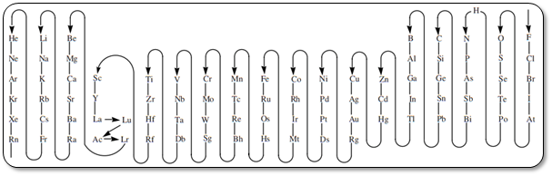

ORDEN DE ESCRITURA
A efectos de formulación el orden de electronegatividad decreciente que se sigue no es el establecido por Pauling sino otro más simple (por convenio): grupo 17 hacia abajo, grupo 16 hacia abajo, hidrógeno, grupo 15 hacia abajo, etc. Esto supone considerar a todos los halógenos como más electronegativos que el oxígeno, lo que implica cambios en el nombre de los compuestos que forman el oxígeno con los halógenos y en la colocación de los símbolos

TIPOS DE NOMENCLATURA (formas de nombrar una sustancia)
NOMENCLATURA TRADICIONAL, CLÁSICA O FUNCIONAL.
Solo aceptada en compuestos ternarios
Este es el método más ambiguo y su uso únicamente se debe a estar establecido por la costumbre. Se basa en los prefijos PER- e HIPO- y en los sufijos -ICO y -OSO. Estos afijos indican cuál de los números de oxidación posibles de un elemento es el que se debe tener en cuenta.
Para un elemento NO hay unos números de oxidación únicos y universalmente aceptados. Además requiere un esfuerzo memorístico para recordarlos. Se le asigna al elemento el sufijo –ICO si el elemento actúa con la valencia mayor, y el sufijo –OSO si actúa con la menor. La valencia o número de oxidación queda determinada según el siguiente esquema:
|
Si hay una única valencia: -ICO. |
|
Si hay dos valencias: -ICO; -OSO. |
|
Si hay tres valencias: -ICO; -OSO; HIPO-... -OSO. |
|
Si hay cuatro valencias: PER-... –ICO; -ICO; -OSO; HIPO-... –OSO. |
NOMENCLATRA DE COMPOSICIÓN (Recomendada por la IUPAC.)
También es llamada nomenclatura estequiométrica. Esta forma de nombrar está basada en qué tipo de átomos componen la molécula o compuesto. Esta nomenclatura sólo da información sobre qué tipo de átomos están en la sustancia y en qué proporción están.
La proporción en la que se encuentran los distintos átomos se puede expresar usando lo prefijos numerales, los números de oxidación e incluso el número de carga (para compuestos iónicos).
|
Fórmula |
Nombre (Prefijos) |
Nombre (Nº Oxidación) |
Nombre (Nº Carga) |
|
Hg2Cl2 |
Dicloruro de dimercurio |
Cloruro de mercurio(I) |
Cloruro de mercurio(1+) |
|
PCl5 |
Pentacloruro de fósforo |
Cloruro de fósforo(V) |
- |
|
Fe2O3 |
Trióxido de dihierro |
Óxido de hierro(III) |
Óxido de hierro(3+) |
Observa que no procede el nombre con el número de carga en el compuesto que no es iónico.
Nomenclatura estequiométrica (antigua sistemática)
En donde las proporciones en que se encuentran los elementos en una fórmula puede indicarse por medio de prefijos griegos: mono(1), di(2), tri(3), tetra(4), penta(5), hexa(6), hepta(7), etc. y hemi(1/2) y sesqui(3/2). El prefijo “mono” solo es necesario para recalcar la estequiometria de un compuesto en relación con otros relacionados (por ejemplo, para el NO, N2O,…) y no se usa para el segundo elemento. Así, NO será monóxido de nitrógeno, N2O se nombra monóxido de dinitrógeno y NO2, dióxido de nitrógeno.
Los prefijos son palabras que se anteponen al prefijo nombre del compuesto y representan el número de átomos que hay en la molécula del elemento. Existen diferentes prefijos los cuales provienen del griego y a continuación se presenta el número de átomos al que hace referencia el prefijo.2
|
Prefijos griegos |
Número de átomos |
|
mono- |
1 |
|
di- |
2 |
|
tri- |
3 |
|
tetra- |
4 |
|
penta- |
5 |
|
hexa- |
6 |
|
hepta- |
7 |
|
octa- |
8 |
|
non-, nona-, eneá- |
9 |
|
deca- |
10 |
Generalmente solo se utiliza hasta el prefijo hepta-, el prefijo mono- normalmente se elude salvo que haya posibilidad de confusión.
En casos en los que en vez de átomos se trate de grupos de átomos como compuestos tales como sales dobles y triples, oxisales y similares, se pueden emplear los prefijos bis-, tris-, tetraquis, pentaquis, hexaquis, etc.
|
CO |
Monóxido de carbono |
|
CO2 |
Dióxido de carbono |
|
S2Cl2 |
Dicloruro de diazufre. |
|
Fe2O3 |
Trióxido de dihierro |
Nomenclatura con números romanos
El nº de oxidación del elemento más a la izquierda se indica en números romanos y entre paréntesis inmediatamente después del nombre. Si en el compuesto interviene un elemento cuyo nº de oxidación es cte., es innecesario indicarlo.
|
FeCl2 |
Cloruro de hierro(II) |
|
FeCl3 |
Cloruro de hierro(III) |
|
V2O3 |
Óxido de vanadio(III) |
|
NiS |
Sulfuro de Níquel(II) |
Como norma general, vamos a usar la nomenclatura de composición estequiométrica (antigua sistemática) o con nº romanos en compuestos binaros y la tradicional aceptada en compuestos ternarios.
NOMENCLATURA EWENS-BASSETT (NÚMEROS DE CARGA)
Se indica el nombre del metal, seguido de un paréntesis sin espacio, donde se indique el valor de la carga en números arábigos seguido de su signo, cuando pueda actuar con distintos valores.
|
FeCl2 |
Cloruro de hierro(2+) |
|
FeCl3 |
Cloruro de hierro(3+) |
|
V2O3 |
Óxido de vanadio(3+) |
|
NiS |
Sulfuro de Níquel(2+) |
NOMENCLATURA DE ADICIÓN (Recomendada por la IUPAC.)
No la vamos a usa en la práctica.
Como norma general, vamos a usar la nomenclatura de composición estequiométrica (antigua sistemática) o con números romanos (coincide con la stock) en compuestos binaros y la tradicional aceptada en compuestos ternarios.
NOMENCLATURA DE SUSTITUCIÓN
La nomenclatura de sustitución da bastante información sobre la estructura de la molécula. Se basa en un hidruro progenitor que se modifica al sustituir los átomos de hidrógeno por otros átomos y/o grupos